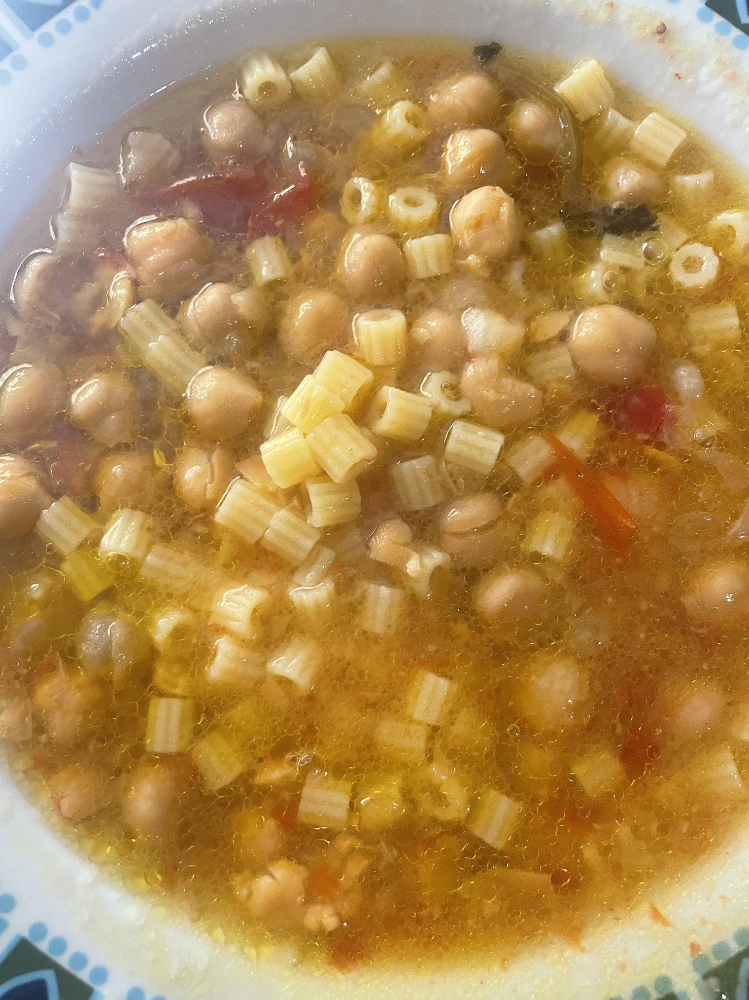
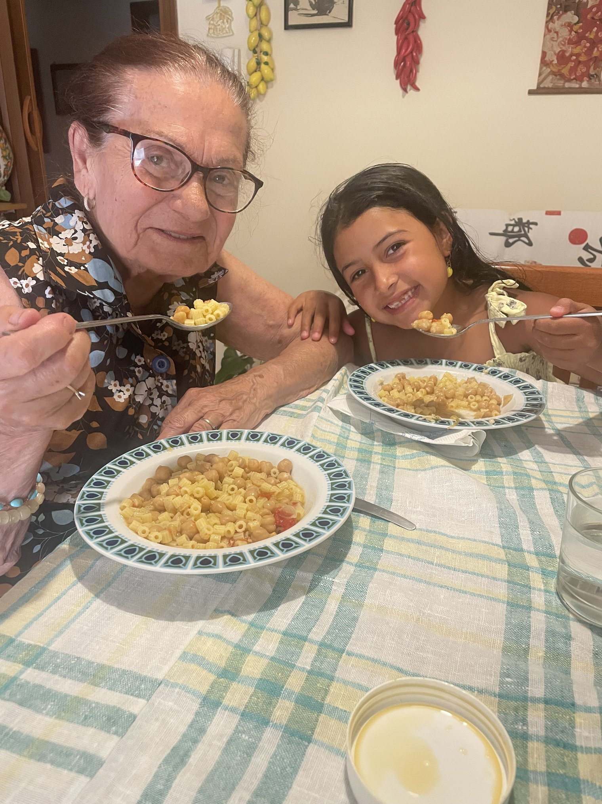
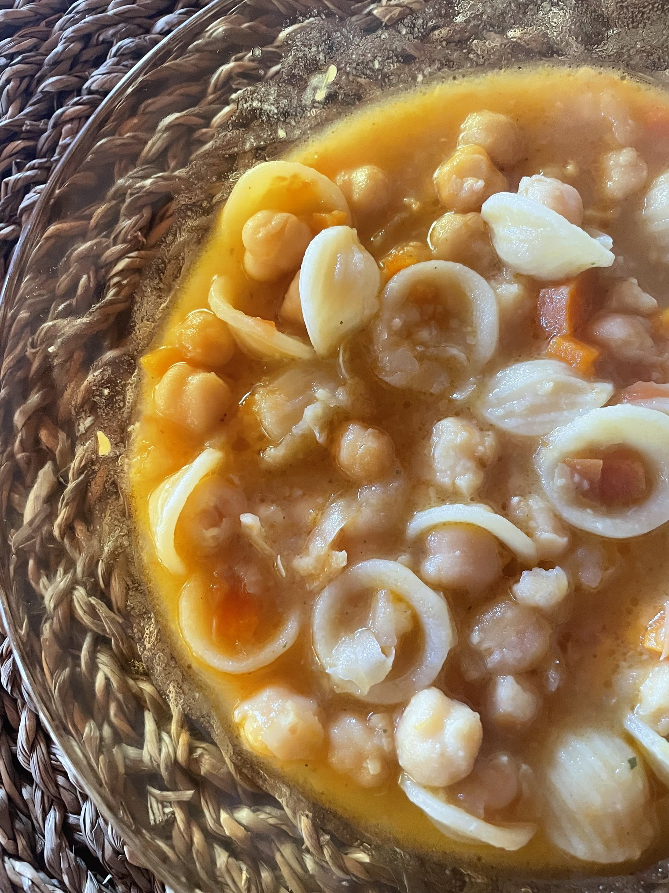

Ceci
Ingredients
×
- ceci
- cipolla
- pomodori
- sedano
- 1 cucchiaio di farina
- pasta
- olio piccante

Preparazione
Passo 1
La sera si mettono ceci sott’acqua calda. Li facciamo riposare tutta la notte.
Passo 2
Li mettiamo nella pentola a pressione con l’acqua giusta che li copre.
Passo 3
Mettiamo cipolla a pezzettini piccoli e pure i pezzi di pomodori e sedano. Aggiungere 1 cucchiaio di farina.
Passo 4
Lo cuociamo finché è cotto (deve rimanere pastoso).
Passo 5
Si possono mischiare con la pasta (tubettini o gnocchi sardi) e con l’olio piccante.

